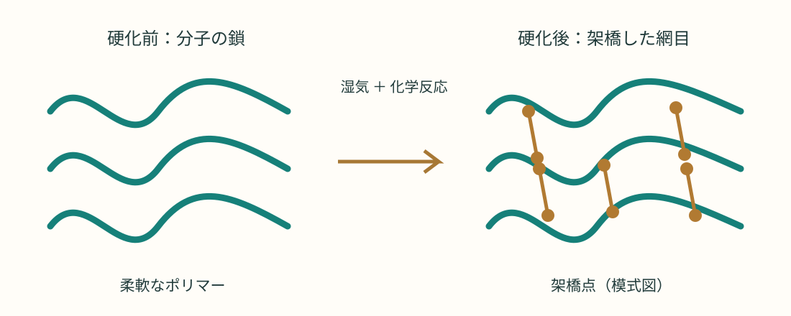
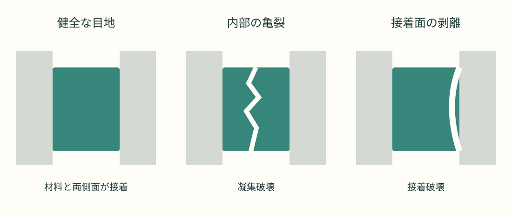

コーキング材は何からできている？ 硬化と劣化の科学
なぜ、チューブの中のペーストが空気に触れるとゴムになるのでしょう。なぜ、水を止めるはずの目地が、やがて割れたり剥がれたりするのでしょう。身近なすきまを守る材料を、原料と化学反応から読み解きます。

01主な原料と化学式
浴室や窓まわりのすきまを埋めるコーキング材は、高分子（ポリマー）を主な結合成分とする配合材料です。建築では「シーリング材」と呼ばれます。硬化後も伸び縮みし、部材の動きに追従して水や空気の通り道をふさぎます。[1]
製品全体を表す一つの化学式はありません。以下は主成分の代表的な繰り返し単位・結合・末端基です。実際の共重合組成や配合は製品ごとに違います。
| 種類 | 主成分・構造の例 | 特徴と選び方 |
|---|---|---|
| シリコーン系 | PDMS（ポリジメチルシロキサン） [−Si(CH₃)₂−O−]ₙ | 耐水性・耐候性に優れる。一般に上からの塗装は難しい。浴室用など用途別に選ぶ。 |
| 変成シリコーン系 | 有機ポリマー（ポリエーテルなど）の末端に −Si(OR)ₓ 基 | シリコーンとは主鎖が異なる。塗装対応品が多いが、塗料との適合確認が必要。 |
| ポリウレタン系 | ウレタン結合 −NH−C(=O)−O− | 接着性・弾性を生かす。屋外では塗装保護を要する製品もある。 |
| アクリル系 | 例：ポリアクリル酸ブチル [−CH₂−CH(COOC₄H₉)−]ₙ | 水性品が多い。内装のすきまなどに使われるが、常時水に浸かる用途には適さない品もある。 |
| ブチルゴム系 | イソブチレン主体の共重合体 主単位 [−CH₂−C(CH₃)₂−]ₙ | 気密・水蒸気の遮断に利用。非硬化形の製品もある。 |
n は繰り返し数、R は有機基。PDMS は元素のケイ素（Si）そのものでも、二酸化ケイ素（SiO₂）そのものでもありません。
ゴムの主体だけでは、使いやすいペーストにならない
充填材の炭酸カルシウム（CaCO₃）は硬さ・粘度・コストなどを調整し、シリカ（SiO₂）は補強や垂れにくさに役立ちます。白色顔料には酸化チタン（TiO₂）などが使われます。さらに架橋剤、触媒、接着付与成分、必要に応じて可塑剤・安定剤・防かび剤などを加えます。すべての製品に同じ成分が入るわけではありません。
架橋剤の例はメチルトリメトキシシラン CH₃Si(OCH₃)₃、脱酢酸型ではメチルトリアセトキシシラン CH₃Si[OC(=O)CH₃]₃ です。触媒にはスズ系・チタン系などがありますが、採用成分は処方によります。
02石英からペーストへ、どう作る？
シリコーン系を例にすると、製造はポリマーを合成する工程と、施工用に配合する工程に分けられます。石英の粉をそのまま混ぜただけでシリコーンになるわけではありません。[3][4]
まず石英などの SiO₂ を炭素で高温還元し、金属ケイ素を得ます。これは工業プロセスの総括式です。続いてケイ素と塩化メチル（CH₃Cl）からメチルクロロシラン類を作り、分離精製、加水分解・縮合や重合などを経て、分子量や末端基を調整したシリコーンポリマーを作ります。メチル基の供給源をたどるとメタノールなどに行き着きます。
- ポリマーと粉体を準備。原料の品質や水分を管理する。
- 混練する。充填材・顔料などを均一に分散させ、粘度と補強性を調整する。
- 硬化成分などを配合。湿気硬化型では水分の混入を抑え、架橋剤・触媒などを扱う。投入順序は処方による。
- 脱泡して密封。真空混練などで気泡を減らし、粘度・硬化・接着性を検査。防湿性のあるカートリッジなどに充填する。
上記は代表的な工程の概略です。真空にするだけで十分に乾燥できるとは限らず、原料乾燥や設備の湿気管理も重要です。2成分形は主剤と硬化剤を分けて包装します。
03なぜ湿気でゴムになる？
多くの1成分形シリコーン系は、空気中の水分で反応し、鎖同士が結ばれた三次元の網目構造になります。これが「架橋」です。単に水が蒸発して固まるのとは違います。柔らかな分子鎖が動きつつ、架橋点が大きな流動を抑えるため、ゴムの弾性が生まれます。[2]
脱アルコール型の反応を模式的に見る
≡Si−OH + HO−Si≡ → ≡Si−O−Si≡ + H₂O
第1段階は加水分解、第2段階はシラノール基（Si−OH）同士の縮合です。R が CH₃ なら放出されるアルコールはメタノール（CH₃OH）。この式は反応部位だけを示し、≡ は残りの結合を省略した記号です。実際にはほかの縮合経路もあります。
脱酢酸型では Si−O−C(=O)−CH₃ の加水分解で酢酸（CH₃COOH）が生じます。お酢に似た臭いはこのためです。脱オキシム型などもあり、すべてのシリコーンから酢酸が出るわけではありません。

1成分形の湿気硬化は通常、表面から内部へ進みます。表面が乾いて見えても内部まで硬化したとは限りません。厚み、温度、湿度で時間が変わるため、使用再開は製品の指定に従います。
変成シリコーン系も反応性シリル基で湿気硬化しますが、主鎖は有機ポリマーです。[5] ウレタン系には水分と反応する1成分形や、ポリオールとイソシアネートを混ぜる2成分形があります。後者の基本反応は R−N=C=O + R′−OH → R−NH−C(=O)−O−R′。一方、水性アクリル系では水の蒸発と樹脂粒子の融着が主な成膜過程です。
04なぜ劣化し、ひび割れる？
シーリング材は屋外で、紫外線・熱・水分と、建物の伸縮を同時に受けます。材料の化学変化と、接着・変形の限界を分けて考えると原因が見えてきます。NIST もこれらを組み合わせて寿命を研究しています。[6][7]
① 光と酸素が、分子鎖を変える
光を吸収する構造や不純物を起点にラジカルが生じ、酸素と反応して酸化が進むことがあります。鎖が切れる「主鎖切断」では強度や弾性が落ち、架橋が増えすぎると硬く伸びにくくなります。どちらが優勢かは樹脂と配合次第です。熱は多くの反応を速めます。シリコーンの Si−O 主鎖は耐候性に優れますが、添加剤や接着界面まで永久に変化しないわけではありません。
② 水分と添加剤の移動が、性質を変える
水分は、加水分解しやすい結合や接着界面に影響します。例えばポリエステル構造を含むウレタンは、そのエステル結合が加水分解を受ける場合があります。一方、すべての樹脂が同じ速さで加水分解するわけではありません。可塑剤などの移行・流出も、硬さの変化や収縮、べたつきにつながり得ます。変色だけで防水性能の喪失を断定することもできません。[9]
③ 毎日の伸び縮みが、亀裂を育てる
日射や気温変化で外壁の目地が開閉します。変形能力を超える動きや繰り返し応力は、材料内部の亀裂を進めます。これが凝集破壊です。目地の幅・深さが不適切だったり、側面2面に加えて底面にも接着する「3面接着」になったりすると、自由な変形が妨げられ、応力が集中します。
④ 接着面が剥がれる場合もある
ほこり、油、水分、適合しない下地、必要なプライマーの省略などで、材料自体が健全でも端から剥がれる接着破壊が起こります。新品の早期剥離を、すべて経年劣化と決めつけるのは不正確です。[6]

浴室の黒ずみは、表面の汚れや水分を利用するかびが原因のこともあります。「黒い＝ゴムの分子鎖が切れた」とは言えません。ただし隙間・亀裂・剥離や漏水があれば、清掃だけで直る問題ではありません。
05自作できる？ どう使い分ける？
原料から防水用シーリング材を自作するのは、家庭向けとはいえません。分子量、充填材の分散、水分、触媒量のわずかな違いが性能を変えます。ケイ素の製造には高温設備が必要で、クロロシラン類は水と激しく反応し、塩化水素を生じ得ます。工業合成と、完成品を使うDIY施工は別の作業です。
市販のシリコーンにでんぷんなどを混ぜて成形する工作法はありますが、建築用の接着性・変形追従性・耐久性を保証するものではありません。雨漏り補修や浴室の防水を任せる用途には、市販の適合製品を使うのが現実的です。
| 使いたい場所 | 確認する点 |
|---|---|
| 浴室・洗面まわり | 衛生・水まわり用途への適合、防かび性、下地への接着性。常時水没の可否は別途確認。 |
| 塗装する外壁の目地 | 変成シリコーン系・ウレタン系などの指定用途と塗料適合。塗装可能でも塗膜が伸縮に追従できるとは限らない。 |
| 内装の小さなすきま | アクリル系などの収縮・塗装性・水濡れ条件。動きの大きい目地には適合確認が必要。 |
| 水槽・食品に接する場所 | それぞれの用途に明示的に適合した専用品。一般の防かび浴室用を流用しない。 |
長持ちさせる基本は、劣化した旧材を適切に除去し、下地を清掃・乾燥し、必要なプライマーを使い、バックアップ材やボンドブレーカーで適切な目地形状と2面接着を確保すること。製品の施工要領・安全データシート（SDS）に従って換気し、硬化前の接触を避けます。[8]
「寿命は何年」と一律に言える？
材料、日射、雨、水没、目地の動き、施工状態で変わります。単一の年数で判断せず、製品・建物の点検計画と、亀裂・剥離・漏水などの状態を合わせて確認します。
古い材の上に、そのまま重ねれば直る？
表面だけ覆っても、浮いた接着面や内部の破断は解消しません。旧材との相性もあるため、補修方法は製品仕様と下地の状態で決めます。外壁や漏水を伴う箇所では専門業者による原因確認も有効です。
06結論：すきまを守るのは、分子の網目
コーキング材の正体は、柔軟なポリマーと鉱物粉末、硬化成分などを組み合わせた複合材料です。シリコーン系では Si−O の鎖を架橋してゴムにし、変成シリコーン系やウレタン系などは異なる骨格と反応を使います。
劣化には分子鎖の変化だけでなく、添加剤の移動、繰り返し変形、接着面の剥離も関わります。材料選びと目地設計、下地処理までそろって、初めて「水を止めながら動きについていく」という役割を果たせます。
参考資料・さらに読む
メーカー・業界団体・研究機関の資料を参照し、一般的な仕組みを解説しました。個別製品の配合・用途・施工条件は、各製品の仕様書とSDSを優先してください。
- 日本サッシ協会｜シーリング材 / Sealant definition
- 信越化学工業｜1成分形液状ゴム / One-component liquid rubbers
- Silicones Europe｜Chemistry: synthesis of methyl chlorosilanes
- WACKER｜Annual Report 2024: Products & Services
- Sika｜Sikaflex-505 UV: silane-terminated polymer
- Dow｜European Building Envelope Weatherproofing Manual（p.11：破壊・劣化）
- NIST｜Building Joint Sealant Service Life Prediction
- シャープ化学工業｜よくある質問：シーリング材
- セメダイン｜シーリング材が変色した
確認日：2026年10月30日。図解は本記事用に制作。製造・反応式は代表例を簡略化したもので、家庭向けの合成手順ではありません。